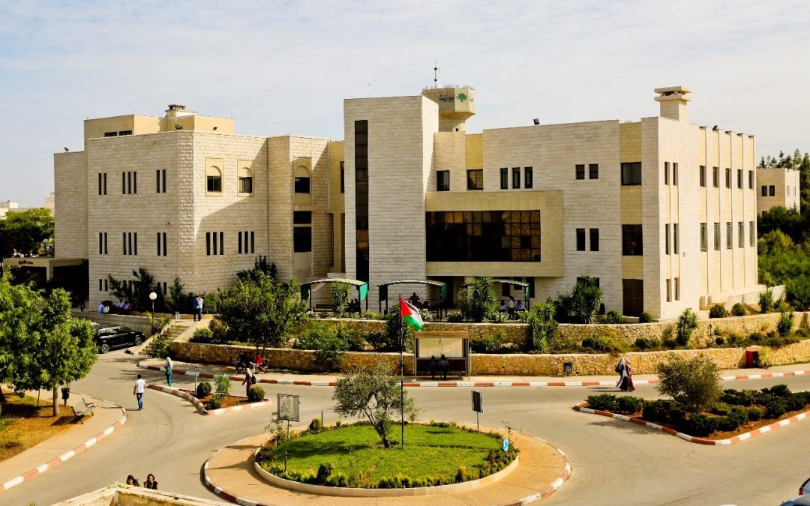

<p>
  Hello, my name is Ayah Saad, and I am 23 years old. I graduated from Birzeit
  University with a Bachelor's degree in Computer Engineering. During my
  studies, I worked on multiple projects, including the development of a
  calculator using PIC microcontrollers and the design of a maze-solving robot
  with Arduino. These experiences have equipped me with strong problem-solving
  skills, proficiency in programming languages such as C++ and Java, and the
  ability to collaborate effectively in team environments.
</p>


